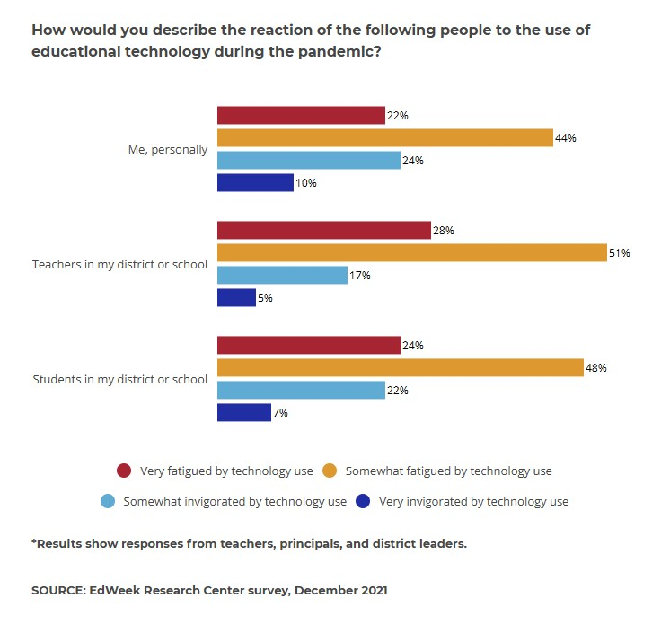

How Do Computers Enhance Accessibility and Equity in Education?
Computers have proven pivotal in breaking down barriers to education, especially for underserved communities. Initiatives like the "One Laptop Per Child" program have provided affordable laptops to students in developing nations ("One Laptop per Child | The New York Times"). In the U.S., government programs like the E-Rate initiative subsidize internet access for schools in low-income areas ("E-Rate"). However, challenges persist, with internet accessibility and affordability being significant roadblocks. For instance, rural areas often face limited connectivity, while the high costs of devices and internet services continue to exclude many families.
What Are the Limitations and Challenges of Computer Integration in Education?
Despite their benefits, computers in education come with their share of challenges. Over-reliance on technology can lead to a decrease in critical thinking skills, as students may resort to instant solutions rather than developing problem-solving abilities. Moreover, many teachers face a steep learning curve when adapting to new technologies, highlighting gaps in professional training. Another pressing issue is "tech fatigue," where constant screen exposure causes mental and physical strain for educators and learners (Klein). Balancing technology with traditional methods remains essential to mitigate these challenges.

How Does Using Computers Redefine Traditional Teaching and Learning Methods?
Computers have reshaped education by enabling blended learning models that merge face-to-face instruction with digital tools. This hybrid approach promotes flexibility and personalized learning, accommodating students' unique needs and paces. However, findings such as those from Teoh's study highlight the complexity of student engagement in hybrid environments. While students in face-to-face settings displayed relatively higher engagement, particularly in performance engagement, virtual environments showcased strengths in skill engagement. Participation engagement plays a critical role across both modalities, with emotional connections stronger in face-to-face learning and skill-focused interactions more prevalent online.
Fully virtual environments, while offering convenience and accessibility, risk eroding interpersonal teacher-student relationships, an essential component of effective education. Human interaction should remain at the core, with technology as a complementary tool. AI-powered platforms offer instant feedback and tailored exercises, yet teachers' emotional support and mentorship are irreplaceable. Hybrid models can address engagement challenges by integrating technology thoughtfully while fostering academic success and human connection.